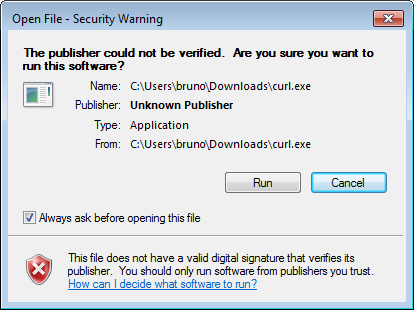

Installing Triggers
-
If you are using Swarm Helix server Triggers, the Swarm Helix server extension must not be installed.
-
Swarm does not support Helix servers configured to use P4AUTH, see Centralized authentication server (P4AUTH) in the Helix Core Server Administrator Guide.
- Helix Core server can refer to a Helix server machine (P4D), proxy, broker, replica, edge server, or commit server. For simplicity, the term Helix server is used to refer to any configuration of a Helix Core server machine.
- Swarm can be connected to Helix servers (P4D) and commit servers.
- Swarm must not be connected to Helix Broker, Helix Proxy, Helix Edge, forwarding replica, or read-only replica servers.
To configure Swarm to connect to more than one Helix server (P4D), see Multiple-Helix server instances.
To configure Swarm to connect to a Helix server configured to use commit-edge architecture, see Commit-edge deployment.
Triggers are still supported, but we recommend you use Helix server Extensions. Helix server Extensions are easier to install and maintain than Triggers. For instructions on installing Extensions, see Installing the Swarm Helix server extension (recommended).
Now that you have a configured instance of Swarm, the last piece is to configure your Helix server to tell Swarm about interesting events. This can be accomplished through the use of triggers.
For more information about Helix server triggers, see Triggers in Helix Core Server Administrator Guide.
Using triggers to push events to Swarm
Helix server provides a facility called triggers to customize the operation of the server, or to invoke additional processing for specific kinds of versioning operations. Swarm provides a trigger script written in Perl that notifies Swarm about activity within the Helix server.
See Trigger options for more information on configuring the Perl trigger.
Set up Swarm triggers with a Windows or Linux-hosted Helix server
Many of the steps in this procedure are common to both Windows and Linux-hosted Helix servers. When there is a difference between the Windows and Linux operating systems, this is indicated in the procedure.
- Ensure that the required Trigger dependencies have been installed on the machine hosting the Helix server.
- Copy the Swarm trigger to the Helix server
- If your Helix server is version 2014.1 (or later), we recommend submitting the trigger script,
p4-bin/scripts/swarm-trigger.pl, to Helix server and running it from the depot. The recommended depot location is//.swarm/triggers/swarm-trigger.pl, especially if you have already setup Comment attachments. - If your Helix server is older than version 2014.1, or you prefer that the trigger file exist in the filesystem, you must copy the
p4-bin/scripts/swarm-trigger.plscript to the server hosting Helix server. If your Helix server deployment uses the commit-edge architecture, the script must also be copied to all edge servers, and it must exist in the same path on all servers. -
Trigger requests to Swarm without a valid API token are ignored. Obtain your API token:
- Log in to Swarm as a super user.
- Click your userid, found at the right of the main toolbar.
-
Select About Swarm.
The About Swarm dialog is displayed and Swarm generates an API token if it doesn't already exist.
- Make a note of the trigger token value displayed at the bottom of the dialog, you will need the trigger token when you configure Helix server for Swarm.
TipClick on the trigger token to select it and then copy it to your clipboard. You can paste it into the
swarm-trigger.conffile when you configure Helix server for Swarm. -
Configure the trigger.
- If you are using the Swarm triggers package described in Install and configure Swarm from a package (recommended), the configuration file is available at
/opt/perforce/etc/swarm-trigger.conf - If you submitted the trigger script to the depot in the previous step, you should similarly submit the configuration file to the depot. The recommended depot location is
//.swarm/triggers/swarm-trigger.conf. - If you copied the trigger script to the commit server and all edge servers in the previous step, also copy the configuration file to the commit server and all edge servers, making sure that they exist in the same path on all servers.
- If you are not using the Swarm trigger package, create
swarm-trigger.confin the same directory asswarm-trigger.pl. - If you submitted the trigger script to the depot in the previous step, you should similarly submit the configuration file to the depot. The recommended depot location is
//.swarm/triggers/swarm-trigger.conf. - If you copied the trigger script to the commit server and all edge servers in the previous step, also copy the configuration file to the commit server and all edge servers, making sure that they exist in the same path on all servers.
- Variables set inside the
swarm-trigger.plscript itself - /etc/perforce/swarm-trigger.conf
- /opt/perforce/etc/swarm-trigger.conf
- The
swarm-trigger.conffile stored in the same directory asswarm-trigger.pl. - Any file passed to the
swarm-trigger.plscript using the -c command line argument -
Linux only: Ensure that the script has execute permissions.
ImportantSkip this step if you have committed the script to the Helix server.
$ chmod +x /path/to/swarm-trigger.pl -
Verify that the trigger script executes correctly.
- For Windows:
Run:
C:\> perl "C:\path\to\swarm-trigger.pl" -t ping -v 0Use the full path to
perlif it is not available in your command path.You should expect to see no output. If the trigger is misconfigured, such as using an invalid trigger token, you would see an error.
WarningOnly if using Curl:
Installation of the triggers may cause a security warning dialog to appear when
curl.exeexecutes:If this occurs, the triggers hang, creating zombie Perl processes. Due to the way triggers are invoked by Helix server, the dialog is normally not visible even though Windows is waiting on interaction.
To resolve this:
- Clear the Always ask before opening this file check box and click Run.
- Right-click
curl.exe, select Properties, and click Unblock.
- For Linux:
-
Update the Helix server triggers table to run the trigger script.
Warning-
The swarm.shelvedel shelve-delete trigger line was added to Swarm in version 2018.1 and updated in version 2020.1.
- New installation or upgrading from Swarm 2017.4 and earlier: add the
swarm.shelvedel shelve-deletetrigger line to the Helix server trigger table if it is not already present. - Upgrading from Swarm 2018.x and 2019.x: replace the existing
swarm.shelvedel shelve-deletetrigger line in the Helix server trigger table with the one supplied in the Swarm version you are upgrading to.
- New installation or upgrading from Swarm 2017.4 and earlier: add the
- Workflow feature:
- Workflow feature enabled (default):
- Comment out the swarm.enforce.1, swarm.enforce.2, swarm.strict.1, and swarm.strict.2 trigger lines in the Helix server trigger table if they are present.
- Add the
swarm.enforce change-submit,swarm.strict change-content, andswarm.shelvesub shelve-submittrigger lines to the Helix server trigger table if they are not already present.
- Workflow feature disabled:
- Comment out the
swarm.enforce change-submit,swarm.strict change-content, andswarm.shelvesub shelve-submittrigger lines in the Helix server trigger table if they are present. - The swarm.enforce.1, swarm.enforce.2, swarm.strict.1, and swarm.strict.2 trigger lines are commented out because they are optional. They require that the DEPOT_PATH1 and DEPOT_PATH2 values are configured appropriately. Support for these triggers will be dropped in a later release.
- The first two lines configure the enforce feature, which rejects any submitted changes that are not tied to an approved review.
- The second two lines configure the strict feature, which rejects any submitted changes when the contents of the changelist do not match the contents of its associated approved review.
- If you need to apply enforce or strict to more depot paths, copy the lines and tweak the depot paths as necessary.
- Comment out the
The Workflow feature is enabled by default in Swarm 2019.2 and later. The trigger lines required when workflow is enabled are different to those required when workflow is disabled:
TipThe trigger script can provide the list of trigger lines that should work, with little to no adjustment, by executing it with the
-ooption:Windows
C:\> perl "C:\path\to\swarm-trigger.pl" -oLinux
$ /path/to/swarm-trigger.pl -oTip- The
%quote%c:\path\to\perl.exe%quote%entry is only required for Windows-hosted systems. - An initial tabbed indent is required for each trigger line.
- Commented out trigger lines are not stored.
-
If you disable the workflow feature in the Swarm config.php file, workflow will not be processed by Swarm but a small overhead is still incurred by the Helix server each time it runs a workflow trigger script. This overhead can be eliminated by commenting out the swarm.enforce change-submit, swarm.strict change-content, and swarm.shelvesub shelve-submit workflow triggers.
As a Helix server user with super privileges, edit the Helix server trigger table by running the
p4 triggerscommand and add the following lines (including the initial tab character). Update theperl.exe, trigger script, and configuration file paths in each line below to reflect the actual paths on your Helix server:- If you have committed both the trigger script and the configuration file to the Helix server:
swarm.job form-commit job "%quote%c:\path\to\perl.exe%quote% %//.swarm/triggers/swarm-trigger.pl% -c %//.swarm/triggers/swarm-trigger.conf% -t job -v %formname%" swarm.user form-commit user "%quote%c:\path\to\perl.exe%quote% %//.swarm/triggers/swarm-trigger.pl% -c %//.swarm/triggers/swarm-trigger.conf% -t user -v %formname%" swarm.userdel form-delete user "%quote%c:\path\to\perl.exe%quote% %//.swarm/triggers/swarm-trigger.pl% -c %//.swarm/triggers/swarm-trigger.conf% -t userdel -v %formname%" swarm.group form-commit group "%quote%c:\path\to\perl.exe%quote% %//.swarm/triggers/swarm-trigger.pl% -c %//.swarm/triggers/swarm-trigger.conf% -t group -v %formname%" swarm.groupdel form-delete group "%quote%c:\path\to\perl.exe%quote% %//.swarm/triggers/swarm-trigger.pl% -c %//.swarm/triggers/swarm-trigger.conf% -t groupdel -v %formname%" swarm.changesave form-save change "%quote%c:\path\to\perl.exe%quote% %//.swarm/triggers/swarm-trigger.pl% -c %//.swarm/triggers/swarm-trigger.conf% -t changesave -v %formname%" swarm.shelve shelve-commit //... "%quote%c:\path\to\perl.exe%quote% %//.swarm/triggers/swarm-trigger.pl% -c %//.swarm/triggers/swarm-trigger.conf% -t shelve -v %change%" swarm.commit change-commit //... "%quote%c:\path\to\perl.exe%quote% %//.swarm/triggers/swarm-trigger.pl% -c %//.swarm/triggers/swarm-trigger.conf% -t commit -v %change%" swarm.shelvedel shelve-delete //... "%quote%c:\path\to\perl.exe%quote% %//.swarm/triggers/swarm-trigger.pl% -c %//.swarm/triggers/swarm-trigger.conf% -t shelvedel -v %change% -w %client% -u %user% -d %quote%%clientcwd%^^^%quote% -a %quote%%argsQuoted%%quote% -s %quote%%serverVersion%%quote%" # The following three triggers are used by workflow. If workflow is disabled in the Swarm # configuration then they should be disabled. swarm.enforce change-submit //... "%quote%c:\path\to\perl.exe%quote% %//.swarm/triggers/swarm-trigger.pl% -c %//.swarm/triggers/swarm-trigger.conf% -t checkenforced -v %change% -u %user%" swarm.strict change-content //... "%quote%c:\path\to\perl.exe%quote% %//.swarm/triggers/swarm-trigger.pl% -c %//.swarm/triggers/swarm-trigger.conf% -t checkstrict -v %change% -u %user%" swarm.shelvesub shelve-submit //... "%quote%c:\path\to\perl.exe%quote% %//.swarm/triggers/swarm-trigger.pl% -c %//.swarm/triggers/swarm-trigger.conf% -t checkshelve -v %change% -u %user%" # The following triggers are only used to prevent a commit without an approved review. # They predate the workflow functionality and should only be used if workflow is disabled. # Support for these will be dropped in a later release. # swarm.enforce.1 change-submit //DEPOT_PATH1/... "%quote%c:\path\to\perl.exe%quote% %//.swarm/triggers/swarm-trigger.pl% -c %//.swarm/triggers/swarm-trigger.conf% -t enforce -v %change% -p %serverport%" # swarm.enforce.2 change-submit //DEPOT_PATH2/... "%quote%c:\path\to\perl.exe%quote% %//.swarm/triggers/swarm-trigger.pl% -c %//.swarm/triggers/swarm-trigger.conf% -t enforce -v %change% -p %serverport%" # swarm.strict.1 change-content //DEPOT_PATH1/... "%quote%c:\path\to\perl.exe%quote% %//.swarm/triggers/swarm-trigger.pl% -c %//.swarm/triggers/swarm-trigger.conf% -t strict -v %change% -p %serverport%" # swarm.strict.2 change-content //DEPOT_PATH2/... "%quote%c:\path\to\perl.exe%quote% %//.swarm/triggers/swarm-trigger.pl% -c %//.swarm/triggers/swarm-trigger.conf% -t strict -v %change% -p %serverport%"
- If you have copied the trigger script and configuration file to common paths on all servers:
swarm.job form-commit job "%quote%C:\path\to\perl.exe%quote% %quote%/path/to/swarm-trigger.pl%quote% -c %quote%/path/to/swarm-trigger.conf%quote% -t job -v %formname%" swarm.user form-commit user "%quote%C:\path\to\perl.exe%quote% %quote%/path/to/swarm-trigger.pl%quote% -c %quote%/path/to/swarm-trigger.conf%quote% -t user -v %formname%" swarm.userdel form-delete user "%quote%C:\path\to\perl.exe%quote% %quote%/path/to/swarm-trigger.pl%quote% -c %quote%/path/to/swarm-trigger.conf%quote% -t userdel -v %formname%" swarm.group form-commit group "%quote%C:\path\to\perl.exe%quote% %quote%/path/to/swarm-trigger.pl%quote% -c %quote%/path/to/swarm-trigger.conf%quote% -t group -v %formname%" swarm.groupdel form-delete group "%quote%C:\path\to\perl.exe%quote% %quote%/path/to/swarm-trigger.pl%quote% -c %quote%/path/to/swarm-trigger.conf%quote% -t groupdel -v %formname%" swarm.changesave form-save change "%quote%C:\path\to\perl.exe%quote% %quote%/path/to/swarm-trigger.pl%quote% -c %quote%/path/to/swarm-trigger.conf%quote% -t changesave -v %formname%" swarm.shelve shelve-commit //... "%quote%C:\path\to\perl.exe%quote% %quote%/path/to/swarm-trigger.pl%quote% -c %quote%/path/to/swarm-trigger.conf%quote% -t shelve -v %change%" swarm.commit change-commit //... "%quote%C:\path\to\perl.exe%quote% %quote%/path/to/swarm-trigger.pl%quote% -c %quote%/path/to/swarm-trigger.conf%quote% -t commit -v %change%" swarm.shelvedel shelve-delete //... "%quote%C:\path\to\perl.exe%quote% %quote%/path/to/swarm-trigger.pl%quote% -c %quote%/path/to/swarm-trigger.conf%quote% -t shelvedel -v %change% -w %client% -u %user% -d %quote%%clientcwd%^^^%quote% -a %quote%%argsQuoted%%quote% -s %quote%%serverVersion%%quote%" # The following three triggers are used by workflow. If workflow is disabled in the Swarm # configuration then they should be disabled. swarm.enforce change-submit //... "%quote%C:\path\to\perl.exe%quote% %quote%/path/to/swarm-trigger.pl%quote% -c %quote%/path/to/swarm-trigger.conf%quote% -t checkenforced -v %change% -u %user%" swarm.strict change-content //... "%quote%C:\path\to\perl.exe%quote% %quote%/path/to/swarm-trigger.pl%quote% -c %quote%/path/to/swarm-trigger.conf%quote% -t checkstrict -v %change% -u %user%" swarm.shelvesub shelve-submit //... "%quote%C:\path\to\perl.exe%quote% %quote%/path/to/swarm-trigger.pl%quote% -c %quote%/path/to/swarm-trigger.conf%quote% -t checkshelve -v %change% -u %user%" # The following triggers are only used to prevent a commit without an approved review. # They predate the workflow functionality and should only be used if workflow is disabled. # Support for these will be dropped in a later release. # swarm.enforce.1 change-submit //DEPOT_PATH1/... "%quote%C:\path\to\perl.exe%quote% %quote%/path/to/swarm-trigger.pl%quote% -c %quote%/path/to/swarm-trigger.conf%quote% -t enforce -v %change% -p %serverport%" # swarm.enforce.2 change-submit //DEPOT_PATH2/... "%quote%C:\path\to\perl.exe%quote% %quote%/path/to/swarm-trigger.pl%quote% -c %quote%/path/to/swarm-trigger.conf%quote% -t enforce -v %change% -p %serverport%" # swarm.strict.1 change-content //DEPOT_PATH1/... "%quote%C:\path\to\perl.exe%quote% %quote%/path/to/swarm-trigger.pl%quote% -c %quote%/path/to/swarm-trigger.conf%quote% -t strict -v %change% -p %serverport%" # swarm.strict.2 change-content //DEPOT_PATH2/... "%quote%C:\path\to\perl.exe%quote% %quote%/path/to/swarm-trigger.pl%quote% -c %quote%/path/to/swarm-trigger.conf%quote% -t strict -v %change% -p %serverport%"
WarningWindows and Linux:
The use of
%quote%is not supported on 2010.2 servers (it is harmless though); if you are using this version, ensure that you do not have any spaces in the path toperl.exeor the script's path.ImportantWorkflow feature disabled:
If your Helix server has SSL enabled and is older than the 2014.1 release, the %serverport% trigger variable does not include the necessary transport indicator, which can cause the enforce and strict triggers to fail.
To solve this problem, add ssl: immediately before %serverport% in the trigger lines. For example:
# The following triggers are only used to prevent a commit without an approved review. # They predate the workflow functionality and should only be used if workflow is disabled. # Support for these will be dropped in a later release. # swarm.enforce.1 change-submit //DEPOT_PATH1/... "%quote%C:\path\to\perl.exe%quote% %quote%/path/to/swarm-trigger.pl%quote% -c %quote%/path/to/swarm-trigger.conf%quote% -t enforce -v %change% -p ssl:%serverport%" # swarm.enforce.2 change-submit //DEPOT_PATH2/... "%quote%C:\path\to\perl.exe%quote% %quote%/path/to/swarm-trigger.pl%quote% -c %quote%/path/to/swarm-trigger.conf%quote% -t enforce -v %change% -p ssl:%serverport%" # swarm.strict.1 change-content //DEPOT_PATH1/... "%quote%C:\path\to\perl.exe%quote% %quote%/path/to/swarm-trigger.pl%quote% -c %quote%/path/to/swarm-trigger.conf%quote% -t strict -v %change% -p ssl:%serverport%" # swarm.strict.2 change-content //DEPOT_PATH2/... "%quote%C:\path\to\perl.exe%quote% %quote%/path/to/swarm-trigger.pl%quote% -c %quote%/path/to/swarm-trigger.conf%quote% -t strict -v %change% -p ssl:%serverport%"
-
-
Configure the Helix server to promote all shelved changes.
When this configurable is set, Swarm has access to all shelved changelists, which is a requirement for pre-commit reviews. When it is not set, users connected to an edge server must remember to use the
-poption when shelving files to promote their shelves to the commit server when initiating a pre-commit review.p4 configure set dm.shelve.promote=1
-
Optionally forward logins to the commit server.
If you intend to use P4V and its Swarm integration, you should consider forwarding logins to the commit server. See P4V Authentication for details.
- Depending on your installation type, do one of the following:
- Swarm package installation: Review the post-install configuration options to customize your Swarm installation, see Post-install configuration options.
- Swarm OVA installation: Review the post-install configuration options to customize your Swarm installation, see Post-install configuration options.
- Swarm tarball installation: Set up a recurring task to spawn workers, see Set up a recurring task to spawn workers.
If you are using the Swarm OVA, the full path to the trigger script within the OVA's filesystem is: /opt/perforce/swarm/p4-bin/scripts/swarm-trigger.pl.
You need to use the API token established in the previous step.
swarm-trigger.pl can be configured directly, but the preferred approach is to create a configuration file called swarm-trigger.conf. Using the configuration file greatly simplifies upgrades.
The following is a sample of what your swarm-trigger.conf should contain:
# SWARM_HOST (required)
# Hostname of your Swarm instance, with leading "http://" or "https://".
SWARM_HOST="http://my-swarm-host"
# SWARM_TOKEN (required)
# The token used when talking to Swarm to offer some security. To obtain the
# value, log in to Swarm as a super user and select 'About Swarm' to see the
# token value.
SWARM_TOKEN="MY-UUID-STYLE-TOKEN"
# ADMIN_USER (optional) Do not use if the Workflow feature is enabled (default)
# For enforcing reviewed changes, optionally specify the normal Perforce user
# with admin privileges (to read keys); if not set, will use whatever Perforce
# user is set in environment.
ADMIN_USER=
# ADMIN_TICKET_FILE (optional) Do not use if the Workflow feature is enabled (default)
# For enforcing reviewed changes, optionally specify the location of the
# p4tickets file if different from the default ($HOME/.p4tickets).
# Ensure this user is a member of a group with an 'unlimited' or very long
# timeout; then, manually login as this user from the Perforce server machine to
# set the ticket.
ADMIN_TICKET_FILE=
# VERIFY_SSL (optional)
# If HTTPS is being used on the Swarm web server, then this controls whether
# the SSL certificate is validated or not. By default this is set to 1, which
# means any SSL certificates must be valid. If the web server is using a self
# signed certificate, then this must be set to 0.
VERIFY_SSL=1
Modify the swarm-trigger.conf configuration file to set the SWARM_HOST and the SWARM_TOKEN variables appropriately.
Windows only:
You may need to edit the trigger script to specify the full path to curl.exe if the HTTP::Tiny module is not installed.
Linux only:
swarm-trigger.pl looks for configuration in the following files. Variables defined in the later files will override the earlier defined variables of the same name:
Windows and Linux:
If you specify ADMIN_USER, the ticket contained in %USERPROFILE%/p4tickets.txt (Windows), $HOME/.p4tickets (Linux), or the optional ticket file specified with the ADMIN_TICKET_FILE must use the port that was used to start Helix server. For example, if p4d is started with:
C:\> p4d -p my-helix-core-server:1666 ...
then the ticket for the admin user specified with ADMIN_USER should be established with:
C:\> p4 -p my-helix-core-server:1666 -u admin_userid login
If the ticket was established using the wrong port, the error message you encounter includes the port that the trigger is attempting to use:
'swarm.strict.1' validation failed: Invalid login credentials to [port] within this trigger script; please contact your administrator.
Skip this step if you have committed the script to the Helix server.
$ /path/to/swarm-trigger.pl -t ping -v 0
You should expect to see no output. If the trigger is misconfigured, such as using an invalid trigger token, you would see an error.
Run the trigger script without any arguments to see additional usage information.